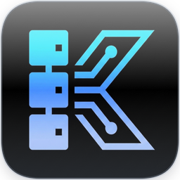

Keel
Your local dev stack, without Docker.
- PHP, Node.js, Caddy, Nginx, Apache, MariaDB, PostgreSQL, Redis and more, installed natively in a click
- Local sites with HTTPS on
.test, tunnels to share them, Mailpit for dev mail - Everything in its own folder: uninstall and your system is untouched
macOS · Windows · LinuxFreev1.0.2
Visit Keel